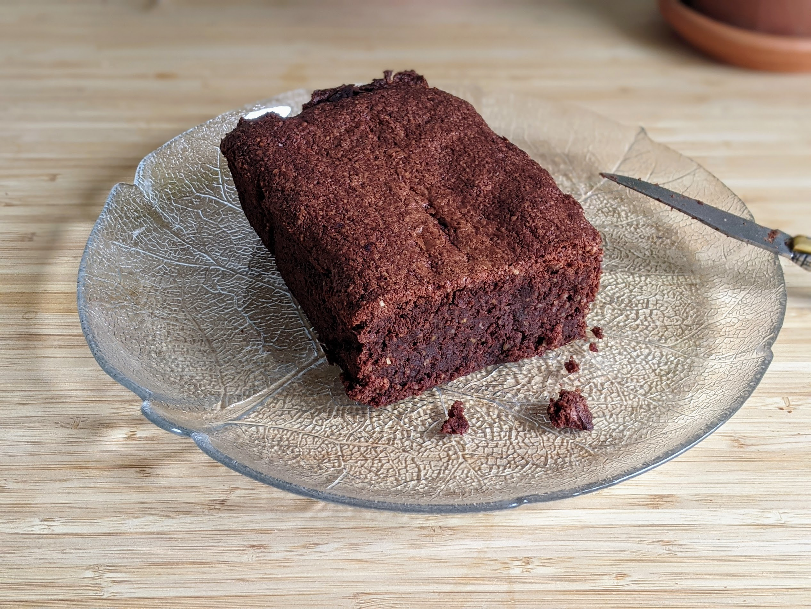

Cake chocolat-gingembre

Pour un cake et 8 parts environ :
- 200g de chocolat pâtissier
- 175g de beurre ramolli
- 100g de poudre d'amandes
- 100g de sucre
- 60g de gingembre frais
- 40g de farine
- Trois œufs
- Une pincée de sel
- Casser le chocolat en morceaux et le faire fondre au bain-marie.
- Pendant ce temps, éplucher et râper le gingembre, ou bien le couper en tout petits bouts.
- Travailler le beurre en pommade à la cuillère, puis incorporer le chocolat fondu en mélangeant tout le temps.
- Ajouter le sucre, puis les jaunes d'œufs un par un, puis la farine, la poudre d'amandes, et le gingembre, en continuant de mélanger en permanence.
- Faire préchauffer le four à 220°C. Battre les blancs d'œuf en neige avec une pincée de sel, puis les incorporer dans le mélange doucement pour que le tout soit bien aéré.
- Beurrer un moule à cake et le recouvrir de papier sulfurisé. Verser la pâte dedans, baisser la température du four à 170°C, et enfourner 45 minutes.
- Déguster une fois refroidi.
Retour à la liste des recettes